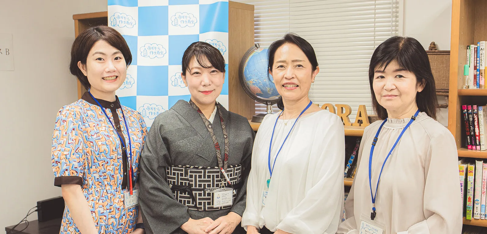
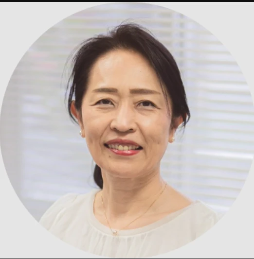

書くことがない・面接が苦手なとき
自己PRカード、作文、面接の準備の順番と、推薦を受けるか決める前に考えること。

都立高校推薦入試対策クラス
部長も生徒会もしていない。勉強も、あまり好きではない。 それでも、都立高校の推薦入試を考える入口はあります。 好きなことや毎日の経験を振り返り、行きたい学校を考え、自分の言葉で書いて話す。その準備を、あおぞら作文教室が対話から支えます。
推薦入試の無料相談（30分・Zoom）を予約するZoomで30分、眞野先生がお話を伺います。
あおぞら作文教室の講師たち（左から3人目が塾長の眞野玲子）
書く前に 話す対話から材料を見つけます
講師1人に2〜5名一人ひとりを見ます
五反野・阿佐ヶ谷2教室で通えます
入会金・教材費なし料金は確認中
推薦入試と聞くと、成績がとても良い子や、部長・生徒会をした子のための入試だと感じる方は少なくありません。質問サイトにも、中学生から「役職がないので、自己PRに書くことがない」という相談が見られます。
勉強が好きではない子の進路を考えるとき、推薦入試も選択肢に入れる理由を、眞野先生が話しています。
勉強が好きではない子には、推薦入試という選択肢もある、と眞野先生は考えています。推薦では内申に加えて、作文や面接で「将来何をしたいか」を伝える準備をします。検査の内容は学校ごとに違うので、志望校の募集要項で確かめます。
推薦入試は、テストの点だけで決まる入試ではありません。好きなことや毎日の経験を言葉にする準備で、力を出せる子がいます。
一方で、推薦でも通知表の成績（調査書）は点数に入ります。推薦を考える場合も、一般入試の勉強は続けます。推薦が合う子もいれば、一般入試に力を集めた方がよい子もいます。どちらが合うかを一緒に考えるのも、教室の仕事です。
受検する人は全員、個人面接を受けます。ほかに作文や小論文など、学校ごとに決めた検査があります。
自己PRカードそのものに点数はつきません。面接はこのカードをもとに行われます。書いたことを、自分の言葉で話せることが大切です。
たとえば令和8年度の都立足立高校の作文は、「あきらめずに行動した経験」を書く問題でした。特別な実績より、自分の経験を具体的に書けるかが問われます。
東京都教育委員会の委員会報告にも、面接などの準備は「自分の考えを整理し、高校での学びや将来について考える機会」になると書かれています。合否だけでなく、自分を知り、考えを言葉にする経験になります。

あおぞら作文教室は、作文を通して、子どもが自分の考えを言葉にする力を育ててきた教室です。※7推薦入試の準備では、次の3つを大切にしています。
書く前に、話す いきなり作文を書かせることはしません。好きなこと、毎日続けていること、自分の長所と短所を、会話をしながら一緒に整理します。
本人の希望と学校を、照らし合わせる お子さんがやりたいことと、志望校が求める生徒の姿が合っているかを確かめ、志望理由につなげます。
自分の言葉で、伝える 自己PRカード、作文、面接まで、本人の言葉で書いて話す練習をします。
教室は、合格を約束する場所ではありません。お子さんが自分の進路を考え、自分の言葉で伝えられるようになるまで、眞野先生と講師が一緒に準備します。※8
推薦入試の無料相談（30分・Zoom）を予約するまだ相談するほどではない方は、公式LINEで質問できます。
自己PRカード、作文、面接の準備の順番と、推薦を受けるか決める前に考えること。
都立と私立の考え方、授業料以外の費用、塾代の無利子貸付の条件。
推薦クラスの内容、料金、お申込みの流れ。
※9